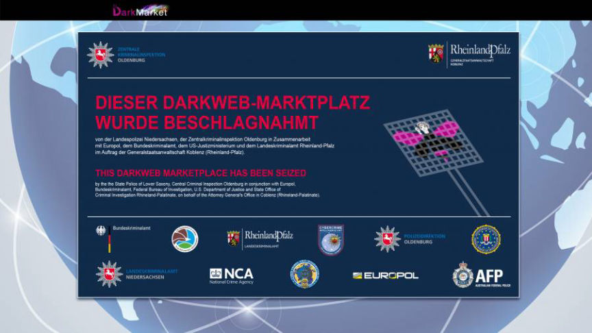
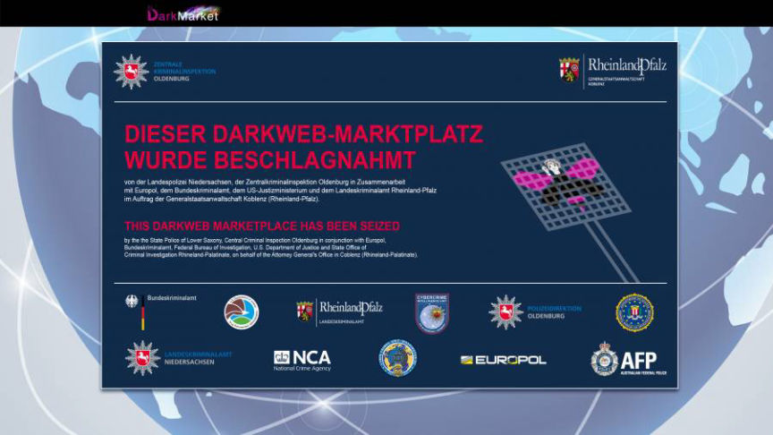

German Dark Web Drugs Vendor Indicted
~1 min read | Published on 2022-12-07, tagged Darkweb-Vendor, Indicted using 225 words.
The Central Office for Cybercrime Bavaria (ZCB) filed charges against a German man suspected of distributing large quantities of drugs through the dark web.
The 20-year-old man from Schwandorf, Bavaria, reportedly sold large quantities of cocaine, heroin, and methamphetamine via vendor accounts on multiple dark web marketplaces including the now-defunct DarkMarket.

The Investigation that led to the defendant's arrest was based on information acquired following the seizure of DarkMarket in January 2021. The ZCB and the Munich Customs received information regarding a suspected vendor based in Bavaria from the DarkMarket takedown operation in December 2021. The "extensive investigations" that followed allegedly led to the identification of the 20-year-old defendant as the operator of an undisclosed drugs vendor account on DarkMarket.
The investigators arrested and detained the defendant in March 2022. Further investigations revealed that the 20-year-old had been selling drugs on multiple darknet marketplaces since January 2020.
The investigators believe the defendant fulfilled more than 1,000 orders. The defendant consequently made more than 166,000 euros and distributed at least 1.3 kilograms of cocaine and a total of at least 1,200 grams of heroin and methamphetamine.
The ZCB filed an indictment against the defendant at the Juvenile Court of the Amberg District Court on November 11, 2022. The 20-year-old is charged with 1,083 counts of dealing in illicit drugs and 144 counts of dealing in large amounts of illicit drugs.
The 20-year-old man from Schwandorf, Bavaria, reportedly sold large quantities of cocaine, heroin, and methamphetamine via vendor accounts on multiple dark web marketplaces including the now-defunct DarkMarket.

The Investigation that led to the defendant's arrest was based on information acquired following the seizure of DarkMarket in January 2021. The ZCB and the Munich Customs received information regarding a suspected vendor based in Bavaria from the DarkMarket takedown operation in December 2021. The "extensive investigations" that followed allegedly led to the identification of the 20-year-old defendant as the operator of an undisclosed drugs vendor account on DarkMarket.
The investigators arrested and detained the defendant in March 2022. Further investigations revealed that the 20-year-old had been selling drugs on multiple darknet marketplaces since January 2020.
The investigators believe the defendant fulfilled more than 1,000 orders. The defendant consequently made more than 166,000 euros and distributed at least 1.3 kilograms of cocaine and a total of at least 1,200 grams of heroin and methamphetamine.
The ZCB filed an indictment against the defendant at the Juvenile Court of the Amberg District Court on November 11, 2022. The 20-year-old is charged with 1,083 counts of dealing in illicit drugs and 144 counts of dealing in large amounts of illicit drugs.